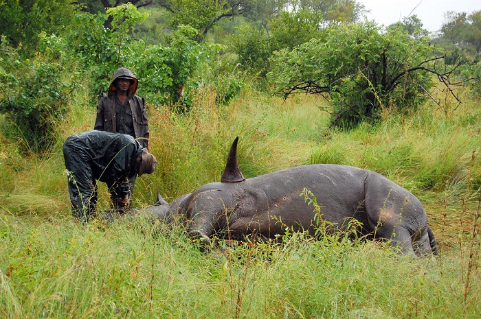
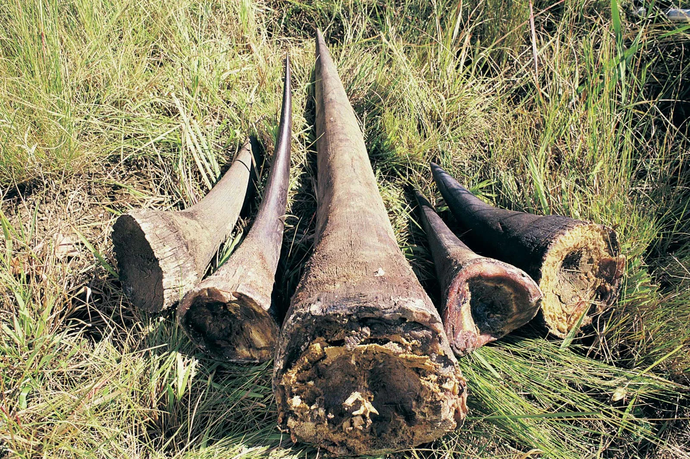
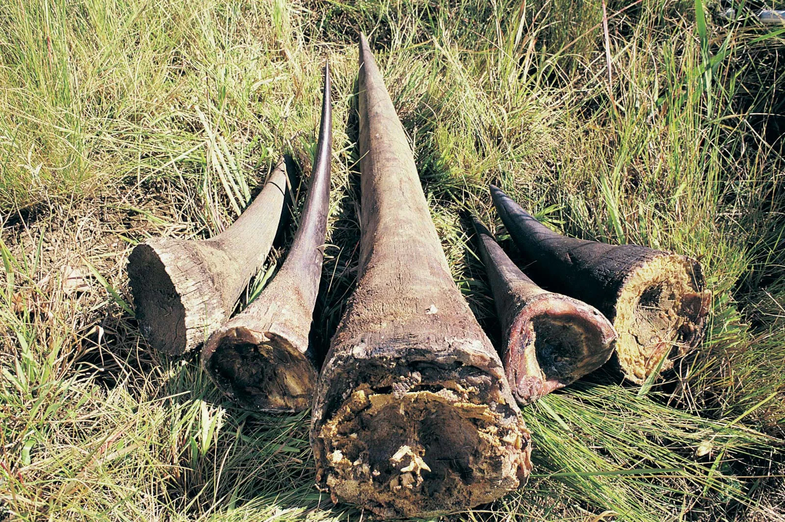

Poaching
What is Poaching ?
poaching, in law, the illegal shooting, trapping, or taking of game, fish, or plants from private property or from a place where such practices are specially reserved or forbidden. Poaching is a major existential threat to numerous wild organisms worldwide and is an important contributor to biodiversity loss.

 

Causes of Poaching
- Conflicts and War
- High Profit Margins. Illegal wildlife trade is a highly lucrative business opportunity for organized criminal groups
- In addition to killing for direct profit, poachers target animals to prevent them from destroying crops or attacking livestock
How To prevent Poaching
- Petitioning for restriction of legal ivory selling
- Recruiting more wildlife scouts
- Enhance Conservation Efforts